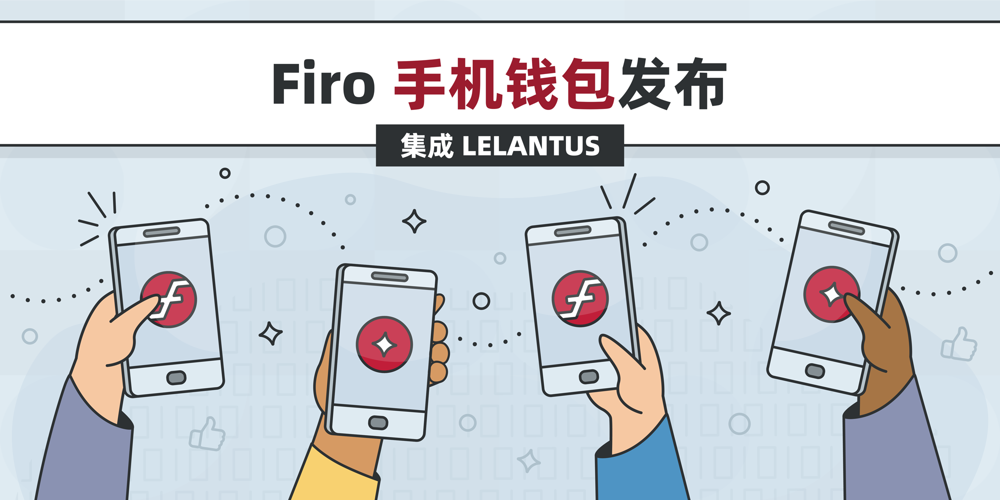

Firo 手机钱包发布
采用 Lelantus 隐私技术的本地手机钱包

我们很自豪地发布我们 Firo 的原生手机钱包，默认启用 Lelantus 隐私！Firo 的 Lelantus 技术允许你向他人发送没有任何交易记录的币，并隐藏发送方，不透露你的任何信息。
这个钱包的发布标志着在使 Firo 和我们的隐私技术易于每个人使用方面迈出了一大步！该钱包的设计使匿名化过程无缝衔接，所有资金在收到时自动匿名化，所有传出交易自动使用 Lelantus 发送。
你的 Firo 钱包可以方便地用助记词种子短语进行备份，并且可以通过密码或指纹保护钱包。
我们的 Firo 移动团队经过几个月的努力，为 Lelantus 交易移植了所有必要的加密技术，以便在移动端工作，而无需完整的区块链。我们为这个钱包建立的轻钱包基础设施也将用作我们即将推出的桌面轻钱包的基础。
iOS 版本即将推出，我们也在努力让 Firo 手机钱包登陆 Google Play 商店和 FDroid。我们还将在轻钱包检索数据的方式上进一步改进隐私，并集成内置的币交换功能。
我们欢迎社区对如何使我们的手机钱包变得更好提出反馈意见！请下载试试吧！